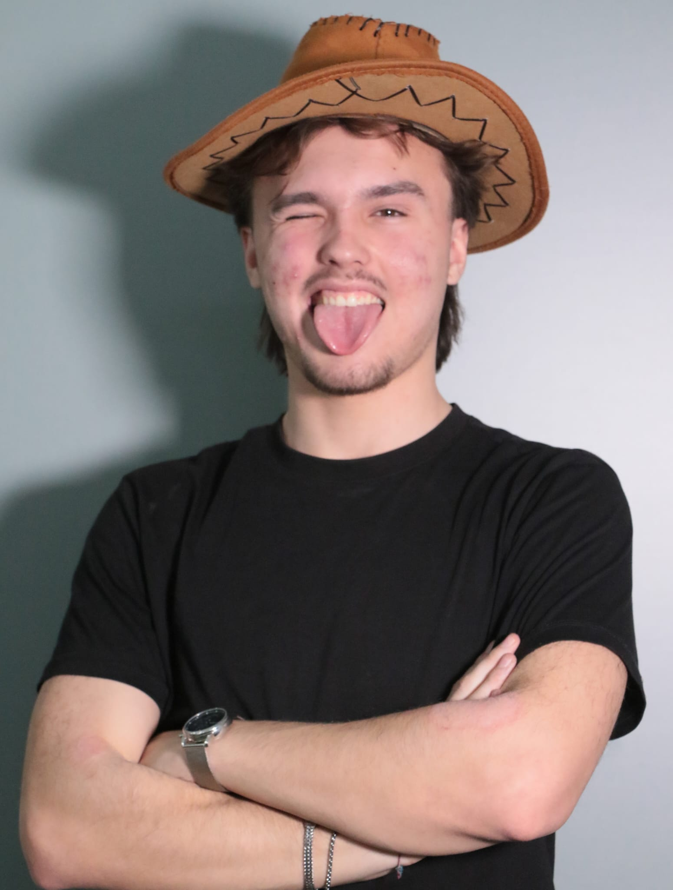

Ciao, sono Vladyslav
Appassionato di tencologia, dei videogiochi e amante del mondo della comunicazione. Mi piacrebbe fare diventare le mie passoni il mio lavoro, o fare i milioni ai gratta e vinci, comunque vada continuerò ad essere curioso.
scopri di più su di me
Le mie esperienze
Nao Challenge 2023 & 2024: Programazzione Arduino e Social Media Manager
Sviluppo software e hardware tramite l'utilizzo di Arduino e creazione contenuti per social media.
Membro fondatore di P&P e co-founder CoC Clan
Posizione di rilevanza nello'ambito della dirigenza, della supervisione e dello sviluppo presso P&P con posiziuone di co fondatore e membro attivo nell'ambito della pianificazione del clan P&P con l'obiettivo di innovare, scalare e migliorare insieme
Coding Girls 2026
Tutor e suipervisore durante la giornata dell' Hackathon Coding Girls 2026: "occhio al fake, tra meme e realtà" presso l'Università degli Studi di Salerno. chi legge è gae
Google Challenege Campania 2026 presso UNISA :
Sviluppo di progetti basati su Intelligenza Artificiale Generativa in collaborazione con Google. Collaborazione in team multidisciplinari per creare soluzioni tecniche fattibili con forte impatto sul territorio e chiarezza espositiva.